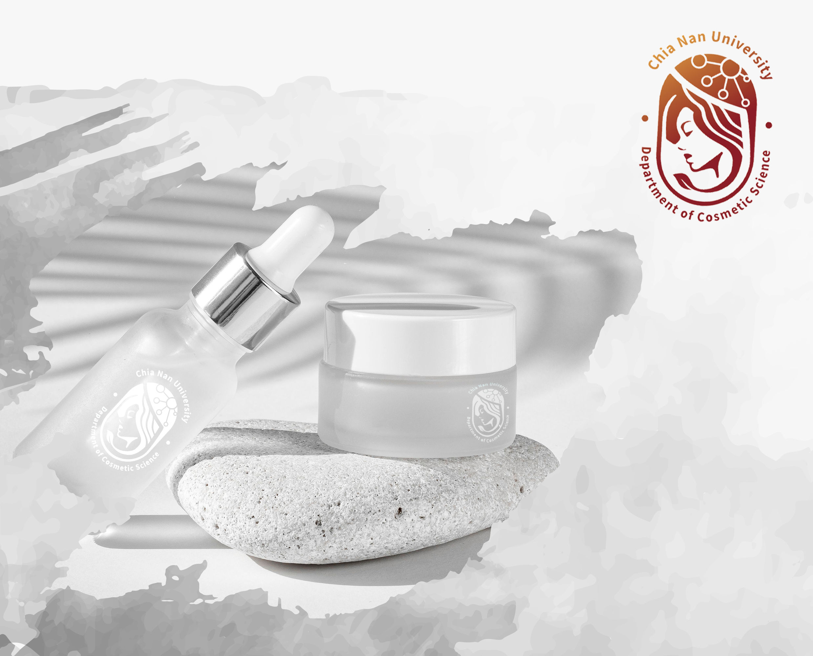
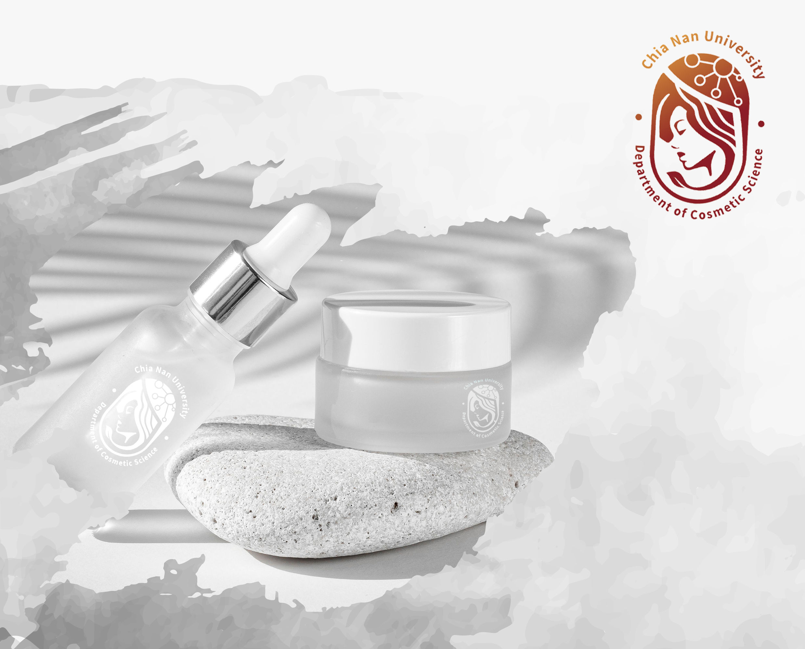

嘉南藥理大學妝品系形象LOGO｜第一名
化妝品是一種歷史悠久的美容技術，最早可追溯自古埃及時代，當時不論男女，皆會運用唇彩以及眼線。 本作品所設計之形象取材自古埃及之貴族女性，高貴卻帶有威嚴，美麗卻不流於風俗。 整體線條採用較圓弧以及流線型之輪廓描繪，字母C及S亦融合於本次作品中。另外頭頂之特殊圖型分別代表了系所的六個研究室，髮尾的樹葉也可視為拿起化妝品化妝，抑或是結合生物科技與中草藥之應用。
化妝品是一種歷史悠久的美容技術，最早可追溯自古埃及時代，當時不論男女，皆會運用唇彩以及眼線。 本作品所設計之形象取材自古埃及之貴族女性，高貴卻帶有威嚴，美麗卻不流於風俗。 整體線條採用較圓弧以及流線型之輪廓描繪，字母C及S亦融合於本次作品中。另外頭頂之特殊圖型分別代表了系所的六個研究室，髮尾的樹葉也可視為拿起化妝品化妝，抑或是結合生物科技與中草藥之應用。
 
